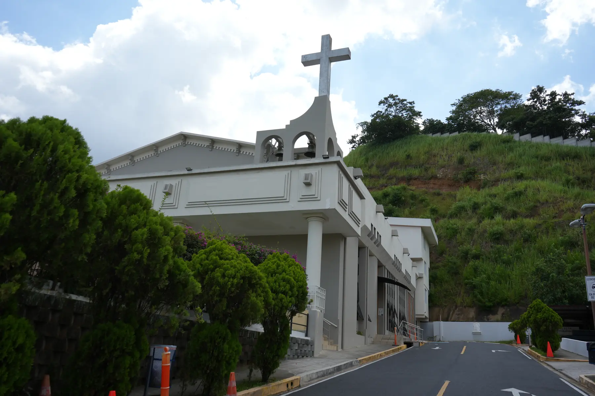
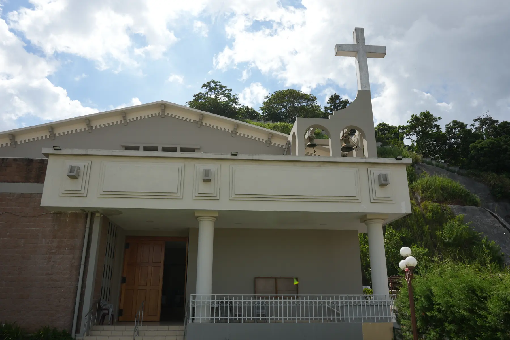
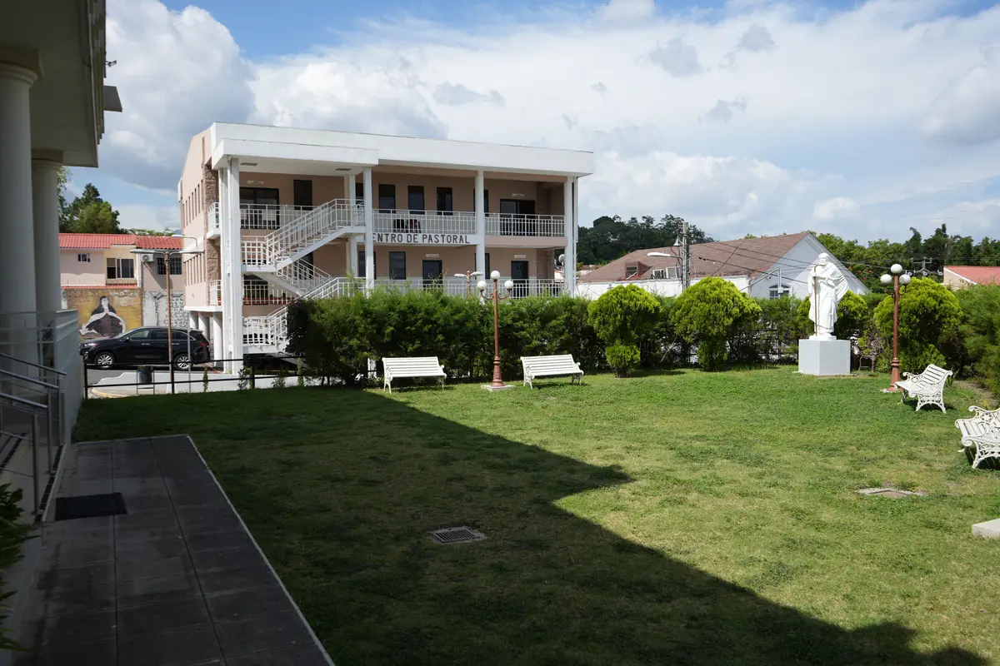
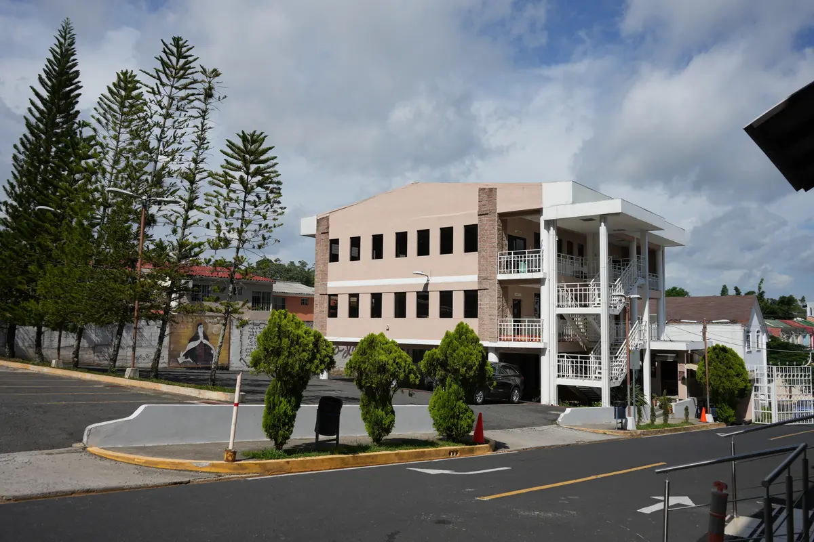
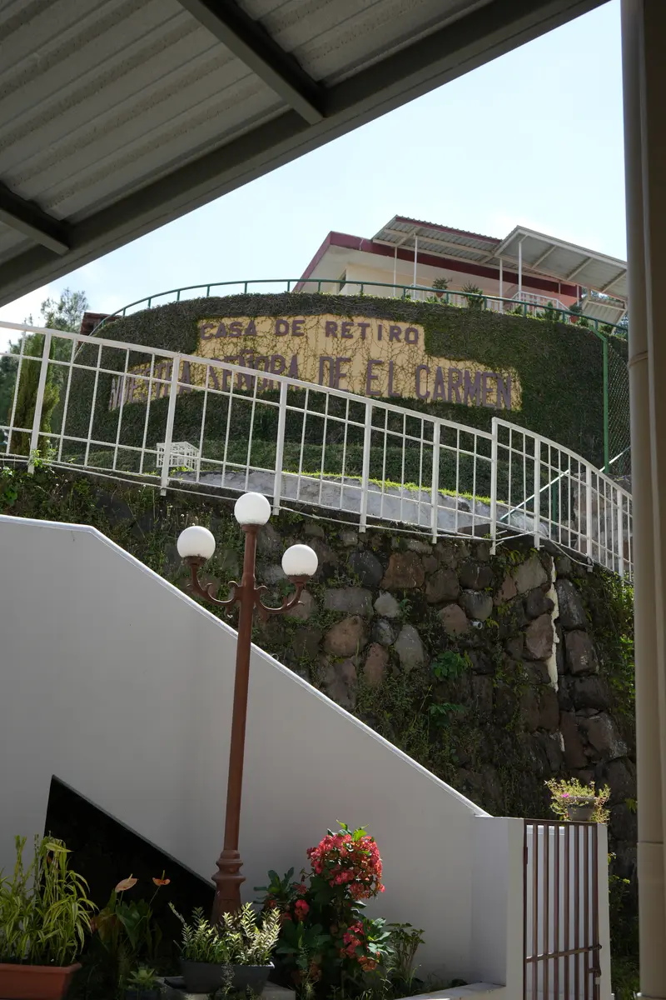

Visit us
How to find and contact the parish
We are in Nuevo Cuscatlán, La Libertad, next to the Casa de Retiro El Carmelo. There is parking inside the grounds.
Contact
The parish office is the way in
For sacraments, church bookings, an appointment with a friar or to join a group, the first step is always the parish office. The secretary holds the requirements, the dates and the community diary.
Nuevo Cuscatlán, La Libertad, El Salvador
2242-7582
Office WhatsApp: To be confirmed
Monday to Friday: To be confirmed
Saturday: To be confirmed
To be confirmed
Church hours
When you can come in to pray
The church
- Every day, opens 6:00 a.m.
- Monday to Friday, closes 9:00 p.m.
- Saturday, closes After the evening Mass
- Sunday, closes 8:30 p.m.
Blessed Sacrament Chapel
It opens at 6:00 in the morning, together with the church. It is one of the most beautiful spaces in the parish and it is meant for staying a while in silence.
Mass times are on the home page. Sunday confession times are To be confirmed.
The grounds
What you will find when you arrive



